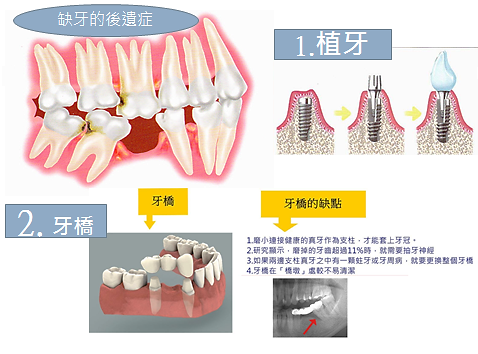

本診所採用進口3D電腦斷層攝影、擁有原廠植牙專用軟體分析系統，可精密診斷出骨質密度、骨組織條件等，採用德國XiVE植體，具有癒合快、疼痛感低、 長期穩定保護齒槽骨的植體，依照病患需求評估植牙條件、時程，為您詳細規劃、解說治療計畫，以及所需費用，歡迎來電或掛號諮詢。
植牙是將鈦金屬植體作為人工牙根，放在缺損牙齒原有的骨頭內與骨結合，以支撐上方之假牙。
當缺牙或拔牙後，如不趕緊做治療，鄰牙會傾倒造成齒列及咬合不良，引起蛀牙及牙周病。 傳統治療上有兩種選擇：一種是削磨缺牙處兩側鄰牙作成固定式牙橋，會損傷兩邊要固定 的自然牙及牙齒有時要抽神經；第二種是做成活動假牙，裝戴及咀嚼上較不便且有異物感。 因此在評估身體狀況、骨質條件後，植牙可能是最佳的選擇。
人工植牙的優點包括：
［1］保留健康的鄰牙。傳統的牙橋需修磨前後鄰牙，即『缺一顆真牙需做三顆假牙』。而人工植牙不必破壞真牙即可修復缺牙；
［2］提供更理想的假牙設計。若缺牙數目多，人工植牙可做成固定假牙，不需佩戴活動假牙；但若條件不足，人工植牙 亦可用來支撐活動假牙，提供比傳統活動假牙更好的穩固性與咀嚼功能；
［3］全口無牙時，可以人工牙根做較有咬合力較穩固之活動假牙；條件允許時也可做成全口固定假牙。
［1］慎選經驗豐富，有口碑的牙醫師評估 患者的身體狀況評估包括：(1)糖尿病的控制良好與否，一般而言糖化血色素最好在7.4以下；(2)心血管疾病是否穩定。牙醫師對患者做口腔篩檢，同時用X光影像評估植牙 區的骨質條件，如骨質條件不佳則可考慮補骨（自體骨、合成骨或補骨粉）、擴骨、上頷竇提高等改善植牙條件，同時採用新的設備及技術，縮短治療時間及次數，減少腫 痛，提高成功率，擬定適合的治療方式及治療計劃。
［2］身體有系統性疾病或服用藥物，應提前告知牙醫師 如有心臟病、高血壓、糖尿病、肝硬化、凝血功能異常等疾病，或長期服用阿斯匹林（Aspirin）等抗凝血劑或骨質疏鬆症的藥物如福善美（Forsamax）等 都需事先告知植牙醫師。
［3］牙周病獲得控制 在植牙前，植體放置位置的其他牙齒周圍，若有牙周病現象，植體周圍可能會出現「植體周膜炎」，類似牙周病現象，植牙後若患者未保持口腔健康，可能造成牙周病併發骨 膜炎、疼痛、嚴重口臭，甚至成為失敗的植體。
［1］植牙後，前期每三個月回診檢查，穩定後每半年回診一次
［2］餐後潔牙，尤其睡前一定要清潔乾淨
［3］使用牙間刷及牙線，做好牙縫清潔
［4］當牙周出現紅腫、出血、化膿及異味，應及早治療